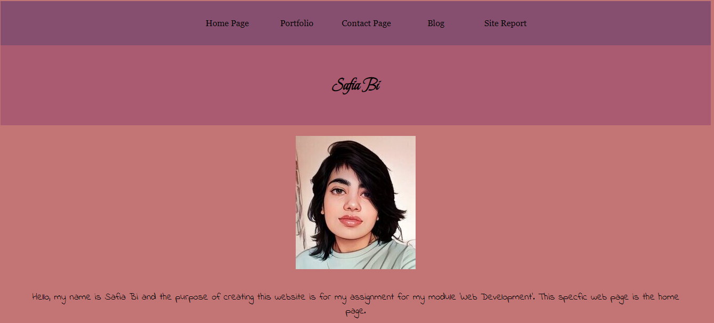

Saturday 5th March 2022
My experience of learning web development this year was relatively pleasant as the teacher was able to explain the material in a simple and easy way to understand. There were plenty of exercises to do to help build what we were learning in class and the teacher was easy to approach in case I had any questions. The format of the code we used was easy to remember. There was one exercise where the navigation, main and aside were on the same row. I had trouble figuring out how to make it fit on the same row but after talking to the teacher I simply had to change the grid template columns from 50%, 50% to 20%, 60% 20%.
Monday 14th March 2022
For my assignment, I had to figure out which grid template areas I wanted to keep, and which ones weren not needed. After a quick google search, I had found out that aside is usually used as a sidebar which was not needed in my website, so I had deleted the code for that. I had kept the rest of the grid areas but rearranged them, so they were all spread across the webpages and were stacked on top of each other in the order of: navigation, header, main, and footer.
Friday 1st April 2022
My favourite part of the assignment was the portfolio page as I was initially stunted on how I would create my portfolio and what I would put inside it. I knew I needed pictures and text underneath them, but I couldn't decide what either of them would be about. My friend had suggested that I used manga panel as I enjoy reading manga in my spare time, however I could not find anything that I genuinely wanted to use. As I was looking for inspiration, I came across an artwork for All For The Game book series by Nora Sakavic which was created by an fan. I had messaged the artist asking for permission to use their art in my work which they agreed to.
Sunday 17th April 2022
My index page had origianlly used to look like the screenshot below as I had used my work from the exercise in class to use as the layout.

I had changed the colour scheme to different shades of blue and added the appropriate text, as well as a picture of myself and the images and links in the footer. However, the navigation had been lost.
After some tinkering and found a colour scheme that was acceptable the navigation has returned and the changed the background colours and the text colours.
I was able to change the navigation links from the bright blue to a black as it looked more professional. I had also changed the font for the header, and p tags.
The portfolio page had origianlly had the navigation links, a heading, text in the body, and a footer containing links to my socials as well as the copyright symbol next to my name.
I had since added my name to the header, placeholder images and the appropriate text to go with the images. I had also changed the background colours.
I had chnaged the font for the header and p tags.